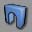
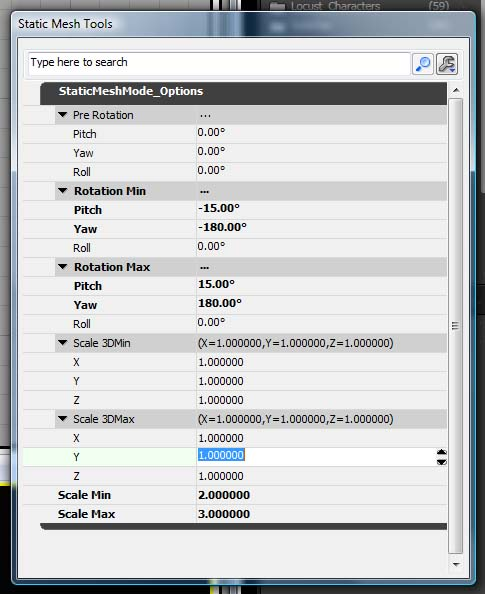
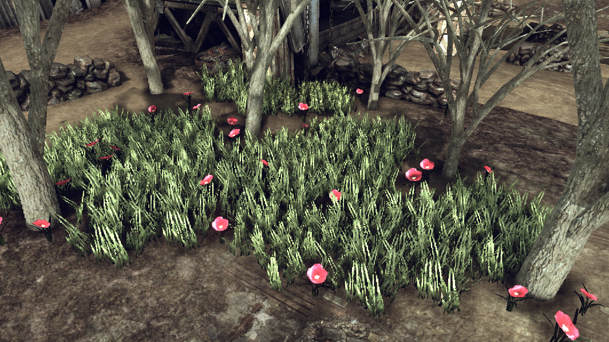
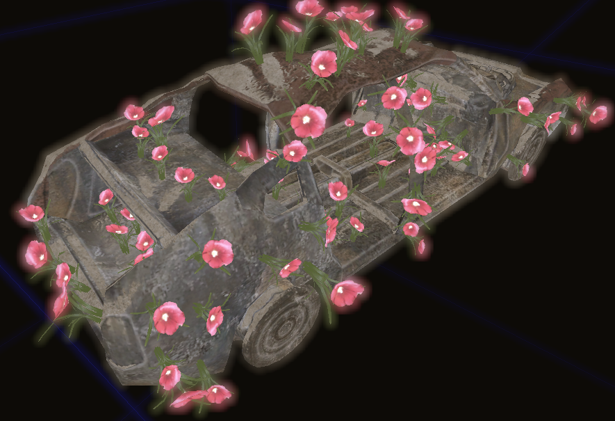

Static Mesh Mode
Overview
Static Mesh Mode allows level designers to drop decorative static meshes into their level with control over scale, rotation and alignment.
Working with Static Meshes
Starting
To enter Static Mesh Mode, click the mode button:

Properties
Once you are in this mode, a floating window will appear with some properties in it that you can set.

Pre Rotation
These rotation values will be applied to the static mesh before it is placed in the world. This allows you to work with meshes that were authored to point down a specific axis rather than straight up. Think of it as "Pre Pivot" but in regards to rotation.
Rotation Min/Max
Define a range of rotational tweaks to be applied. For example, if you were laying down a field of flowers, you might want to set RotationMax->Y to 360 degrees and maybe set up the min/max Pitch to be -15 and +15. Then every flower you place down will have a random yaw rotation as well as be tilted a little to one side or the other.
Scale 3D Min/Max & Scale Min/Max
Defines a range of values to be applied to the DrawScale3D and DrawScale proeprties respectively. This allows you to place meshes that are all slightly different from each other, size wise.
Placing Meshes In The Level
There are several ways of adding meshes into the level but we'll only discuss the ones important to this mode here.
If you hold down The S key and click in the 3D viewport, the currently selected static mesh will get added to the level. This mesh will not be affected by any of the settings in this property window.
However, if you hold down the ALT key while S+Clicking, the static mesh will be aligned to the surface you are clicking on and will take on the properties that you set in this property window.
Example
To show you what is possible with these simple tweaks, I put together the scene below in under a minute. I haven't touched any tree, grass or flower meshes below other than to place them with ALT+S+CLICK.

And sometimes you have an old car that needs to look nice again:

Closing
It's worth noting before we finish here that ALT+S will work for placing static meshes outside of this mode but all you will get is the surface alignment, you won't get any of the rotation and scaling tweaks. But sometimes, you don't need them so it's useful.
Go forth and mesh!
Important!
You are viewing documentation for the Unreal Development Kit (UDK).
If you are looking for the Unreal Engine 4 documentation, please visit the Unreal Engine 4 Documentation site.